<meta charset="utf-8">
<meta name="viewport" content="width=device-width, initial-scale=1">
<meta name="robots" content="noindex">
<title>Martinez: Seven Generations on the Medina</title>
<link rel="stylesheet" href="style.css">

<nav>
  <a href="index.html">Home</a>
  <a href="quintanilla.html">Quintanilla</a>
  <a class="here" href="martinez.html">Martinez</a>
  <a href="flynn.html">Flynn</a>
  <a href="maccoll.html">MacColl</a>
</nav>

<main>
<h1>Martinez</h1>
<p class="sub">My mother's mother's line. Spanish-colonial Texans &mdash; Tejanos &mdash; on one stretch of the Medina River south of San Antonio for two hundred years. Seven generations above my mother, and every link rests on a church register or a census page.</p>

<figure>
  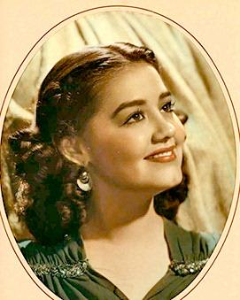
  <figcaption><strong>Eleanor Martinez</strong>, my grandmother, as a young woman in San Antonio. Born 11 July 1922 at 107 Florida Street; died 5 August 2018, aged 96. Everything on this page is her family.</figcaption>
</figure>

<h2>The short version</h2>
<p>In 1834 the Mexican government handed this family <strong>4,428 acres</strong> on the Medina River &mdash; nearly seven square miles. Four generations later my great-grandfather was born with no mother's name on any record, never spent a single day in school, lost his right hand before he was twenty-seven, and signed his own draft card with an X.</p>

<p>Then he bought a house and started hiring men.</p>

<p>That's the story. The rest of this page is how we know it, and which parts I can actually prove.</p>

<h2>How to read this page</h2>
<p>Every claim is graded. <span class="badge proven">Proven</span> means I read a contemporary document that says it &mdash; a priest's handwriting, a census page, a certificate. <span class="badge probable">Probable</span> means the case is strong but one link is inferred rather than written down. <span class="badge lore">Lore</span> means a family tree or a published genealogy says it and no record does.</p>

<p>An earlier version of this page had four things on it that turned out to be wrong, including our best story. They're all corrected below, in their own section. I've left them visible on purpose.</p>

<h2>The one record that opened everything</h2>
<p>For a long time this line stopped dead at a farmer called Gabriel Martinez, born about 1841, and nobody knew where he came from. Then I found his father's baptism &mdash; and Spanish colonial priests, unlike later ones, wrote down the <em>grandparents</em>.</p>

<p>San Fernando church, San Antonio, entry number 1097, in the parish's own book:</p>

<blockquote>
<p>"In the parish church of this city of <strong>San Fernando de Austria</strong>, on the <strong>twenty-fourth day of July of the year eighteen hundred and eleven</strong>, I, Bachiller Don Jos&eacute; Dar&iacute;o Zambrano, acting curate of this district, solemnly baptized, and applied the holy oils and sacred chrism to, <strong>Jose Graviel Justo</strong>, a Spanish infant, <strong>seven days born</strong>, legitimate son of <strong>Dionicio Martinez and Josefa Losoya</strong>; <strong>paternal grandparents Jose Antonio Martinez and Feliciana Gamboa</strong>; and <strong>maternal, Francisco Losoya and Cathalina Poros</strong>; his godparents were Pablo Villaldeando and Antonia Mancha."</p>
</blockquote>

<p><strong>One sentence, three generations</strong> <span class="badge proven">Proven</span>. A baby born about 17 July 1811, his parents, and both sets of his grandparents &mdash; people already adults in the 1780s, when Texas was a province of New Spain.</p>

<p>Two things in it are worth stopping on.</p>

<p>The first is the word <strong>"Losoya."</strong> Losoya is a real place &mdash; a small community on the Medina River south of San Antonio, named after the family. For years I assumed our people just happened to live there. They didn't happen to live there. <strong>Gabriel's grandmother was a Losoya.</strong> The community was his mother's people.</p>

<p>The second is the name <strong>"Dionicio."</strong> My great-grandfather, born eighty years later, was christened <strong>Dionisio Leo Martinez</strong>. The family spent a century garbling that into "Leonicio" and eventually just calling him Leo. Here is where the name comes from: <strong>his third-great-grandfather, in 1811.</strong></p>

<h2>What they did for a living: they were soldiers of the fort</h2>
<p>Here is a document I didn't expect to exist. On <strong>31 December 1784</strong> someone counted the entire military company of the presidio &mdash; the fort &mdash; of San Antonio de B&eacute;xar. Ninety-eight men, listed by name, race and marital status. Four of the surnames that marry into this family are on it, and every one is in the plain <em>Soldiers</em> section, none holding rank:</p>

<blockquote>
<p>31. "Jose <strong>FARIAS</strong>, Spanish, married"<br>
33. "<strong>Francisco LOSOYA</strong>, Spanish, married, has one son 14 or under and two daughters 14 or over and 2 daughters who are 14 years old or under."<br>
38. "Antonio <strong>MARTINES</strong>, Spanish, single"<br>
52. "Francisco Antonio <strong>LEAL</strong>, Spanish, single"</p>
</blockquote>

<p><strong>Entry 33 is almost certainly ours</strong> <span class="badge probable">Probable</span>. Married, one son, four daughters &mdash; and the 1811 baptism names Josefa Losoya's father as Francisco Losoya. Right name, right status, right decade. Josefa was one of those daughters.</p>

<p>So what was the job? The B&eacute;xar company's orders were to escort officials and missionaries, carry messages between posts, and convoy supply trains &mdash; and <strong>twenty men were permanently detached out on Cibolo Creek to guard the ranches</strong>. They were <em>soldados de cuera</em>, "leather-jacket soldiers," named for the <strong>cuera</strong>: a sleeveless knee-length coat of several layers of cured buckskin, worn as armour against arrows. Each man carried a shield, a .69-calibre musket, two pistols, a short sword and a lance, and was required to keep <strong>six horses and a mule</strong>.</p>

<p>Their pay, according to the same source, "might not be collected for as many as five years at a time."</p>

<p>One correction to my own reading, while we're here: <strong>our Martinez ancestor is <em>not</em> identifiable on that roll.</strong> He was married with children by February 1781, and the two Martinez men listed are both single. The Losoyas were fort soldiers. Where the Martinez men were, I can't yet say.</p>

<h2>The land: 20 March 1834</h2>
<p>This is the part that reframes everything else.</p>

<p>The Texas General Land Office still holds the original Spanish and Mexican grant files, and two of them sit next to each other:</p>

<div class="tablewrap">
<table>
<tr><th></th><th>Bexar Abstract 7</th><th>Bexar Abstract 9</th></tr>
<tr><td><strong>Grantee</strong></td><td>Losoya, Domingo</td><td>Mart&iacute;nez, Dionisio</td></tr>
<tr><td><strong>Title date</strong></td><td>20 March 1834</td><td>20 March 1834</td></tr>
<tr><td><strong>Acreage</strong></td><td>4,428.4 acres</td><td>4,428.4 acres</td></tr>
<tr><td><strong>File</strong></td><td>SC 000102:31</td><td>SC 000102:33</td></tr>
<tr><td><strong>Patent</strong></td><td>#81, vol. 60</td><td>#83, vol. 60</td></tr>
<tr><td><strong>Remarks</strong></td><td>"Right bank of the Medina."</td><td></td></tr>
</table>
</div>

<p><strong>The same day. The same acreage. Consecutive file numbers and consecutive patent numbers.</strong> Two adjoining grants surveyed and issued together under the Mexican colonization law &mdash; nearly seven square miles each, along the right bank of the Medina.</p>

<p>A Mart&iacute;nez and a Losoya, taking up neighbouring land on the same morning, because they were one family. Dionicio Martinez had married a Losoya twenty-odd years before.</p>

<p><span class="badge probable">Probable</span> &mdash; and here's the honest caveat. No document ties <em>this</em> Dionisio Mart&iacute;nez to <em>our</em> Dionicio by name and parentage. What I can say is that ours would have been about fifty in 1834, his son farmed that exact river, his grandson farmed the road to Mission Espada, and the family buried their dead in the chapel yard in the middle of that land for three straight generations.</p>

<h2>The church was built on a mass grave</h2>
<p>Nearly every marriage, christening and burial in the next hundred years happens at one small chapel: <strong>Nuestra Se&ntilde;ora del Carmen</strong> &mdash; Our Lady of Mount Carmel &mdash; at Losoya. Gabriel married Mariana there in 1863. Jose Maria was christened there in 1869. Gabriel and Mariana are both buried there.</p>

<p>Here is why that chapel exists.</p>

<p>On <strong>18 August 1813</strong>, about twenty miles south of San Antonio in the Medina River valley, a Spanish royalist army under General Joaqu&iacute;n de Arredondo destroyed a republican army fighting for Mexican independence. Roughly <strong>1,000 to 1,300 men died</strong> in a few hours. Fewer than a hundred escaped. It is the bloodiest battle ever fought on Texas soil, and <strong>the bodies lay unburied for nine years.</strong></p>

<p>Then came the reprisals: martial law, <strong>327 men executed</strong> in the Plaza de Armas over three months, heads left on spikes. About <strong>five hundred women</strong> &mdash; widows and daughters of suspected rebels &mdash; were held in a building called La Quinta for two to four months, grinding corn for the royalist troops while some of their children starved in the street outside. Arredondo was remembered afterwards as <em>the Butcher of B&eacute;xar</em>. By 1821 the entire Tejano population of Texas had fallen to about four thousand people.</p>

<p>The dead were eventually gathered into a crypt, and <strong>a chapel was raised over the crypt.</strong> That chapel is El Carmen. The Texas Historical Commission's marker at the cemetery reads:</p>

<blockquote><p>"Among those interred in the graveyard are the families of <strong>Domingo Losoya and Dionicio Martinez, who received Mexican land grants surrounding the cemetery property</strong>."</p></blockquote>

<p><strong>This family's parish church stands on the burial pit of the Battle of Medina, and they owned the land around it.</strong></p>

<p>One more detail I can't get out of my head. The Domingo Losoya on that marker was the uncle of <strong>Jos&eacute; Toribio Losoya, who died at the Alamo on 6 March 1836</strong> <span class="badge probable">Probable</span>. The man whose fence line ran up against this family's was an Alamo defender's uncle.</p>

<h2>Gabriel and Jesusa, farming the Medina</h2>
<p>The baby from the 1811 baptism grew up to farm that river. <strong>Jose Gabriel Justo Martinez</strong> married <strong>Mar&iacute;a Jesusa Farias</strong> <span class="badge probable">Probable</span>, and between them had at least ten children whose baptisms I can put my hands on: Rita, Pabla de la Trinidad, Celedonio, Encarnaci&oacute;n, Josefa, Manuela, a second Celedonio, plus Jose, Manuel and Bernaldina from the census pages.</p>

<p><strong>He could not read or write.</strong></p>

<p>Born a subject of the Spanish crown, he lived through Mexican independence, the Texas Revolution, annexation to the United States, the Civil War and Reconstruction, without &mdash; as far as any record shows &mdash; ever leaving the same stretch of river.</p>

<figure>
  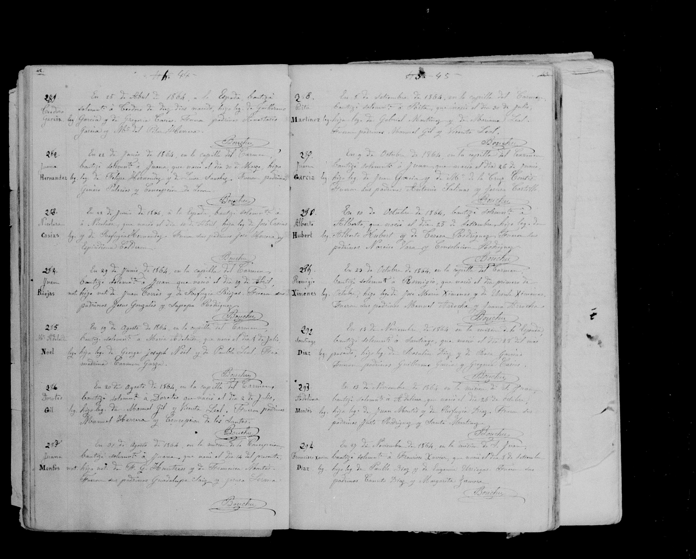
  <figcaption>The Losoya parish register, 1864 &mdash; the actual pages this family's children were entered on, the priest working down the column in Latin and Spanish. This spread includes the baptism of <strong>Rita Martinez, daughter of Gabriel Martinez and Mariana Leal</strong>: Gabriel naming his daughter after his own sister Rita, baptised in the same parish twenty-three years earlier.</figcaption>
</figure>

<p>In the <strong>1850 census</strong> the family is at dwelling 69, "Medina River," Bexar County: Gabriel 32, "Maria J" 26, and seven children. Read down the neighbours and you get the whole community in one column &mdash; <strong>Losoya, Leal, Segu&iacute;n, Z&uacute;&ntilde;iga, Casanova, Menchaca.</strong></p>

<p>And twenty-nine doors away, at dwelling 40, sat the household of <strong>Antonio Leal and Mar&iacute;a del Pilar</strong>, with an eight-year-old daughter the enumerator wrote down as "Marineta."</p>

<p><strong>She married the Martinez boy from twenty-nine doors down thirteen years later.</strong></p>

<h2>Gabriel and Mariana: the violinist who taught himself to read</h2>
<p><strong>Gabriel Martinez (1841&ndash;1916)</strong> and <strong>Mariana Leal (1841&ndash;1905)</strong> <span class="badge proven">Proven</span> are the best-documented couple on this page, and the most surprising.</p>

<p>They married at El Carmen on <strong>6 October 1863</strong>, and the entry records the marriage as performed <em>"con dispensa de dos amonestaciones"</em> &mdash; with two of the three required banns waived. A hurried wedding. Confederate conscription had by then been extended to men up to forty-five, buying a substitute was abolished that December, and a month before the wedding San Antonio's mayor had written to the governor begging him not to draft the city's last remaining policeman. <strong>The connection is my inference, not the record's</strong> &mdash; but the hurry is on the page in the priest's own hand.</p>

<p>Now the two facts I did not see coming.</p>

<p><strong>1870 census, dwelling 495. Occupation: "VIOLINST."</strong></p>

<p>Aged thirty-two, with Mariana and four small children, Gabriel Martinez gave his trade to the census taker as <strong>violinist</strong>. It is the only year in his life he is recorded as anything but a farmer. By 1880 he's back on the land and stays there. For one census, this family's ancestor made his living with a fiddle.</p>

<p>And second: <strong>he was illiterate until middle age, and then he wasn't.</strong> The census records him unable to read or write in 1870 at thirty-two, and again in 1880 at thirty-nine. By <strong>1900</strong> the same question is answered the other way &mdash; he can read and he can write. Somewhere in his forties or fifties, a Tejano farmer with ten children taught himself letters.</p>

<p>His son never did. His grandson signed with an X.</p>

<p>The rest of what the records give him: in <strong>November 1869 he registered to vote</strong> in Bexar County &mdash; Reconstruction, a military-supervised roll, in a state that resented every part of it. In <strong>1880</strong> there are <strong>ten children</strong> under his roof, the youngest two months old. In <strong>1900</strong> he owns his farm free of mortgage, next door to his son who rents, and the census notes he <strong>speaks no English</strong>.</p>

<figure>
  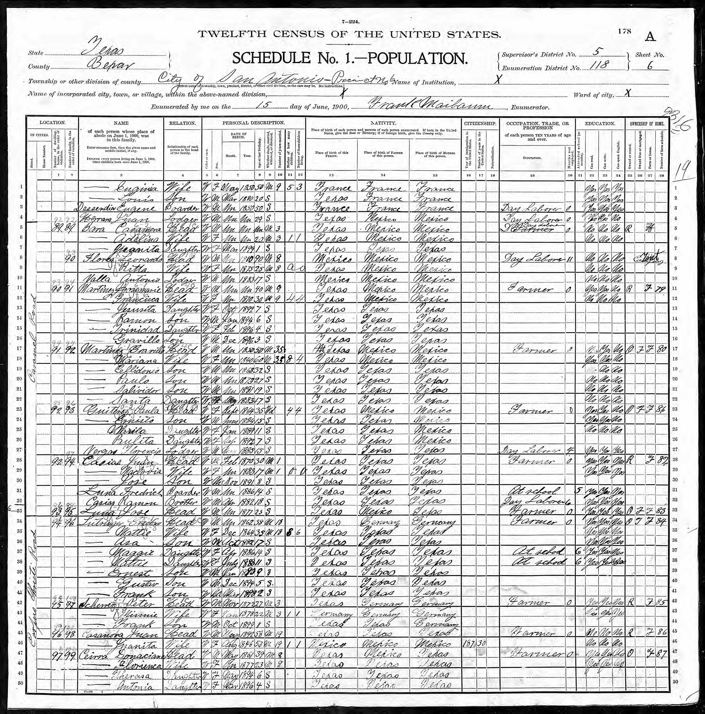
  <figcaption>The 1900 census, "Caramel Road," Bexar County Justice Precinct 6. Two households side by side: <strong>Jose Maria Martinez renting at dwelling 90, and his father Gabriel next door at 91 owning his farm free of mortgage.</strong> One sheet holding two generations &mdash; and the moment just before the land started slipping.</figcaption>
</figure>

<p>He <strong>died on 8 June 1916 at about six in the morning, aged 75, of diabetes</strong> &mdash; five years before insulin was isolated. There was no treatment; there was a starvation diet available at a handful of east-coast research hospitals and nothing whatsoever in south Bexar County. He was buried the next day at El Carmen with a solemn Mass, and the register styles him <em>"Sr."</em></p>

<h2>Jose Maria: up, and then down</h2>
<p><strong>Jose Maria Martinez</strong>, born 5 October 1869, christened at El Carmen <span class="badge proven">Proven</span>.</p>

<p>In <strong>1910</strong> he is doing well: a farmer, an <em>employer</em>, and he owns his farm free of mortgage &mdash; where ten years earlier he had been renting. Five children at home. He cannot read or write, where his father Gabriel could do both.</p>

<p>In <strong>1920</strong> he is on "Mission Espada Road," a truck farmer on his own account, and he is <strong>renting</strong>.</p>

<p>Ten years, and the land was gone.</p>

<p>The whole arc of this family sits in four census lines: <strong>Gabriel owns free (1900) &rarr; Jose Maria owns free (1910) &rarr; Jose Maria rents (1920) &rarr; Leo leaves for the city and buys 127 Klein Street (1930).</strong> The farm was lost, and the living was rebuilt in town by the son who never spent a day in school.</p>

<h2>The blank line</h2>
<p>When Leo died in 1970, his own son filled out the death certificate. Father: <strong>Jose M. Martinez</strong>. Mother:</p>

<figure>
  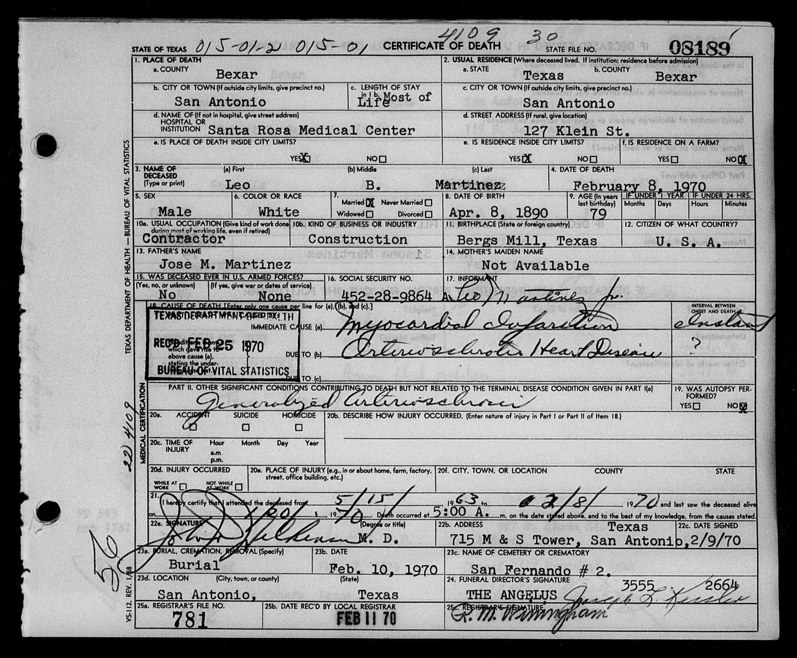
  <figcaption>Texas death certificate 8189. Leo B. Martinez Sr., died 8 February 1970. Father: "Jose M. Martinez." <strong>Mother's maiden name: "Not Available."</strong> His son did not know his own grandmother's name &mdash; and after months of searching, neither do I.</figcaption>
</figure>

<p>Here is what can be established. Jose Maria married <strong>Francisca Luna</strong> at Losoya on <strong>19 November 1890</strong> &mdash; <strong>seven months after Leo was born</strong> &mdash; and the register calls him a bachelor. The 1900 census then lists Francisca as the mother of exactly four children, all born 1892 or later, with no Leo among them.</p>

<figure>
  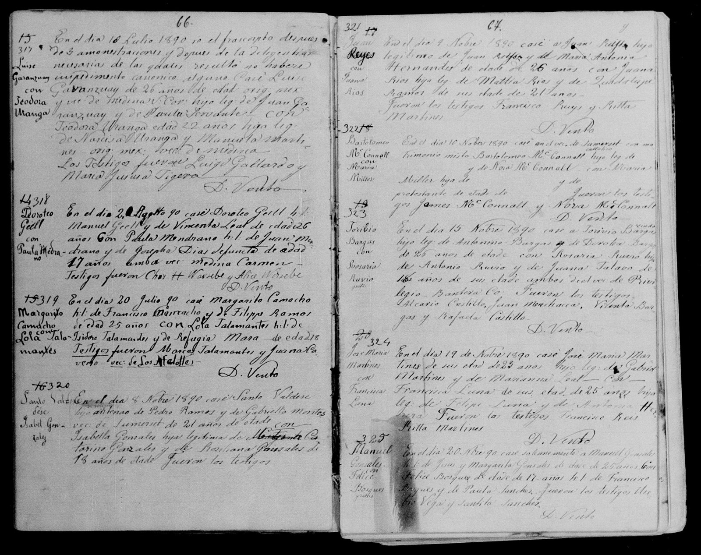
  <figcaption>The Losoya marriage register, entry 324: "On the 19th day of November 1890 I married <strong>Jos&eacute; Mar&iacute;a Mart&iacute;nez, aged 23, legitimate son of Gabriel Mart&iacute;nez and Marianna Leal</strong>, with <strong>Francisca Luna, aged 25, legitimate daughter of Felipe Luna and Antonia Herrera</strong>." Both sets of parents in one entry &mdash; and the date that makes Francisca a stepmother rather than a mother.</figcaption>
</figure>

<p>So: <strong>Leo was born outside marriage, and Francisca Luna was his stepmother</strong> <span class="badge proven">Proven</span>. Which also means Felipe Luna and Antonia Herrera &mdash; names this project worked hard to get &mdash; are step-relatives, not blood.</p>

<p>His mother is named in no record I have found. I have been through the Espada mission register page by page: the book jumps from May 1876 straight to June 1890 and has no entries at all for the spring of 1890. San Fernando Cathedral is indexed for those years and he isn't in it under any spelling. The registers for Del Rio, his other possible birthplace, don't begin until 1906, and the nearest older parish has a gap running from 1884 to 1895. <strong>In both places he could have been born, the book covering April 1890 does not survive.</strong> That is an archive problem, not a searching problem.</p>

<p>There is one live lead, and it came out of his own obituary. It names <strong>five brothers and sisters nobody in this family knew about</strong> &mdash; sisters Catarina Bitela and Gabriela Carrizales, brothers Seferino, Joe and Frank Martinez. <strong>None of them matches Jose Maria and Francisca's four children.</strong> If any of the five was born before November 1890, they are Leo's <em>full</em> siblings &mdash; and a full sibling's baptism would name his mother.</p>

<p>Failing that, it is a DNA test or a letter to the Archdiocese archives. I would rather leave her an honest blank than put a wrong name on her.</p>

<h2>Leo</h2>
<p><strong>Dionisio "Leo B." Martinez, 1890&ndash;1970</strong> <span class="badge proven">Proven</span>.</p>

<p>First, a correction to our own family record. <strong>"Baez" is not documented anywhere.</strong> Every actual record &mdash; two draft cards, his Social Security file, his death certificate &mdash; gives only the initial <strong>B.</strong> "Baez" spelled out appears in exactly one place: a headline typed by a relative on a Find A Grave memorial. It could be Baez, Barrera, Bargas, Benavides. And since his mother is unknown, that initial may well be <em>her</em> surname &mdash; which would make it the only trace of her anywhere.</p>

<p>His own gravestone agrees with the records:</p>

<figure>
  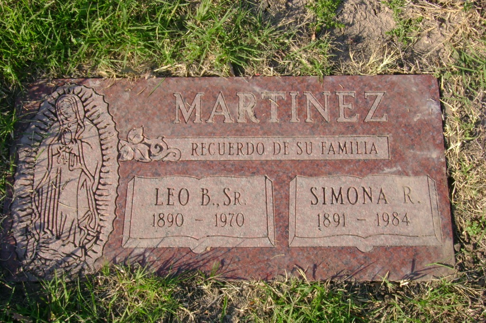
  <figcaption>San Fernando Cemetery No. 2. <strong>"MARTINEZ &mdash; RECUERDO DE SU FAMILIA"</strong> &mdash; a remembrance from his family &mdash; with Our Lady of Guadalupe carved at the left. <strong>Leo B., Sr. 1890&ndash;1970. Simona R. 1891&ndash;1984.</strong> Even the stone his children paid for says only "B."</figcaption>
</figure>

<p><strong>He never completed a single grade of school.</strong> The 1940 census asks for highest grade completed and the answer is <em>none</em>. In rural south Bexar County in the 1890s that was ordinary rather than shameful: in 1900 only about <strong>17% of Mexican-American children in Texas were enrolled in school at all</strong>, and rural provision was close to non-existent.</p>

<p>And at some point before he was twenty-seven, <strong>he lost his right hand.</strong></p>

<p>I know that because of his First World War draft registration, 5 June 1917. He is a teamster &mdash; a man who drives a horse team &mdash; for a Dr. A. A. Luther, living at 811 Monterey Street, married with a wife and three children, describing himself as "Span. Amer." He <strong>signed the card with an X</strong>. And in the registrar's own handwriting, in the box for physical description: <strong>"RT. HAND CUT OFF."</strong></p>

<p>That card had been missed for years because every search filtered on his birth year of 1890, and the card is indexed 1892. What finally proved it was his wasn't a date at all. <strong>My mother &mdash; Leo's granddaughter, who knew him &mdash; confirmed that Leo had no right hand.</strong> Living memory settled an identification the paper couldn't.</p>

<h3>What he did with it</h3>
<p>Read his working life in order and it is a straight line up:</p>

<div class="tablewrap">
<table>
<tr><th>Year</th><th>Address</th><th>Work</th></tr>
<tr><td>1917</td><td>811 Monterey</td><td>Teamster, driving a doctor's team</td></tr>
<tr><td>1920</td><td>705 Florida (renting)</td><td><strong>Wage hand in a wood yard</strong></td></tr>
<tr><td>1922</td><td>107 Florida</td><td>Foreman of a feed store</td></tr>
<tr><td>1926</td><td>310 Indiana</td><td>"Manager"</td></tr>
<tr><td>1930</td><td><strong>127 Klein St &mdash; owned, $2,750</strong></td><td><strong>Concrete contractor, and an employer</strong></td></tr>
<tr><td>1934&ndash;48</td><td>127 Klein</td><td>"Building Contractor"</td></tr>
<tr><td>1950</td><td>127 Klein</td><td>Building contractor, own business</td></tr>
<tr><td>1959&ndash;60</td><td>127 Klein</td><td><strong>"Constn wkr" &mdash; construction worker</strong></td></tr>
</table>
</div>

<figure>
  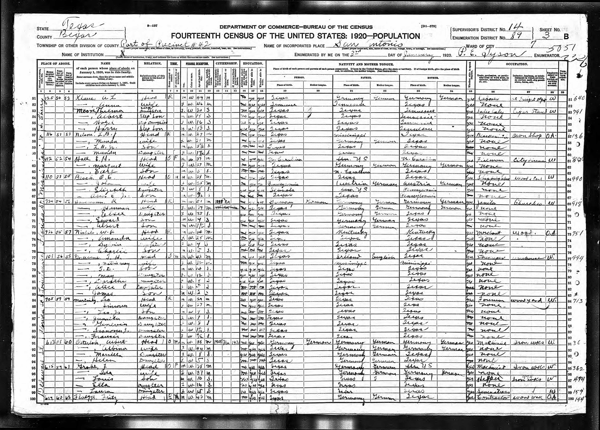
  <figcaption>The 1920 census, San Antonio Ward 7, 705 Florida Street. Leo and Simona are renting, and his occupation is <strong>wage hand in a wood yard</strong> &mdash; cutting and hauling firewood, about as far down the ladder as work went. Ten years later he owns 127 Klein Street and is paying other men's wages.</figcaption>
</figure>

<p>Those last two lines are the whole man. At sixty-nine and seventy he is no longer listed as "contr" but as <strong>"constn wkr."</strong> He built the business up and finished out working with his hands &mdash; the one he had.</p>

<p>They moved four times &mdash; Monterey, Florida, Indiana, Iowa &mdash; and then stayed at <strong>127 Klein Street for forty years</strong>.</p>

<h3>A correction about where they lived</h3>
<p>I had assumed, as most histories of San Antonio would lead you to, that the family lived in the West Side barrio. <strong>They didn't.</strong> Klein and Lambert Streets are in <strong>78204 &mdash; Lavaca</strong>, just south of the King William mansion district and hard by the river: a working-class, mixed German, Mexican and African-American neighbourhood of small houses, largely built by the craftsmen who built the big houses next door.</p>

<p>And <strong>St. Philip of Jesus church &mdash; founded 1914 for Mexican-American Catholics, the church Leo's funeral was held in &mdash; stands at 142 East Lambert.</strong> They lived a few doors from their own parish.</p>

<p>For a sense of what owning that house meant: roughly <strong>30% of San Antonio's Mexican-Americans owned their homes in 1930</strong>, against a city background of <em>corrales</em> &mdash; shack clusters around a shared privy &mdash; and a tuberculosis death rate that by 1939&ndash;41 was <strong>the worst of the ninety-two largest cities in America.</strong></p>

<h3>The man he drove for</h3>
<p>His draft card says "teamster for Dr. A. A. Luther." I went looking, and Dr. Luther turns out not to be a doctor of anything.</p>

<p><strong>Arthur A. Luther</strong> appears in the <em>San Antonio Express</em> in 1915 as <em>"president of the Texas Loan and Mortgage Company."</em> By 1926 he is <em>"prominent in Republican circles&hellip; floor manager of the Wurzbach forces,"</em> and in 1927 he sued five city-election candidates for <strong>$2,800</strong> in unpaid campaign-management fees, billed at $25 a day. His 1947 obituary is headlined <em>"Death Ends Sanitary Engineer's Long and Colorful Career,"</em> has him retiring as a city parks inspector, mentions an early career "in oil promotion and cattle," and repeats his stories of having known <strong>the Wright brothers</strong> near Dayton in 1902.</p>

<p>So the one-handed young man who signed his draft card with a mark was driving the team for a mortgage-company president who ran Republican campaigns on the side.</p>

<h2>Simona</h2>
<p><strong>Simona Ramos (1891&ndash;1984)</strong> <span class="badge proven">Proven</span>. For most of this project she was the person with nothing behind her &mdash; a date off a gravestone and no parents. The record that fixed it had been in San Antonio the whole time, filed under the wrong sex.</p>

<figure>
  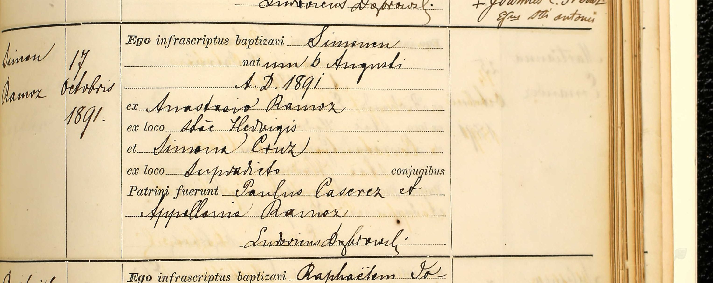
  <figcaption>Annunciation of the Blessed Virgin Mary, San Antonio, page 175: "I the undersigned baptized <strong>Simona, born 6 August 1891, of Anastasio Ramoz, of St. Hedwig, and Simona Cruz</strong>, of the same place, married. Godparents Pablo C&aacute;ceres and Apolonia Ramoz." Signed by Father Ludwik D&#261;browski. The priest wrote her name in Latin as <em>"Simonam"</em>, an indexer read it as a boy called Simon, and she vanished from every search for a century. <a href="documents/simona-baptism-1891.jpg">Full page.</a></figcaption>
</figure>

<p>Her parents were <strong>Anastasio Ramos and Simona Cruz</strong> &mdash; she was named for her mother &mdash; and the entry places them at <strong>St. Hedwig</strong>, the Polish farming settlement east of San Antonio, which is why a Polish priest baptised her.</p>

<p>Anastasio's own baptism is on the register too: born 15 April 1868, baptised at San Fernando on 6 May, "legitimate son of <strong>Miguel Ramos and Guadalupe de los Santos</strong>" <span class="badge probable">Probable</span> &mdash; by a priest, J. C. Neraz, who would later become Bishop of San Antonio.</p>

<p>Neither Anastasio's death nor Simona Cruz's was ever registered anywhere. I checked five area parishes, two county registers, the state index and Find A Grave. No parish covering their district has a surviving death register for the years they died. Rural Texas simply didn't record deaths reliably before about 1920.</p>

<p>Leo and Simona married on <strong>25 May 1910</strong> &mdash; a courthouse wedding, licence issued at Seguin the day before, married by a Justice of the Peace in Gonzales County. No church entry, and therefore no parents named.</p>

<figure>
  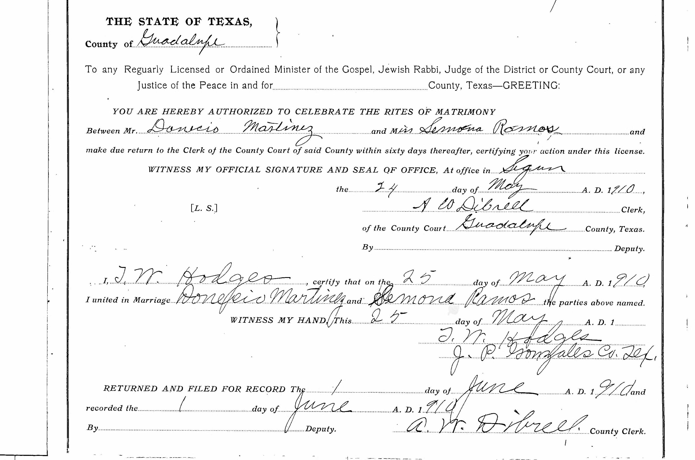
  <figcaption>Guadalupe County Marriage Book 6, page 377. Indexed as "Donecio Martinez" and "Semona Ramos" &mdash; two more garbled names, which is why this took so long to find. He was twenty; she was eighteen.</figcaption>
</figure>

<p>They had <strong>nine children</strong>: Leo Jr., Juanita, Genevieve, an infant Andrea who lived one day, Simona, Frances, Mary Louise, <strong>Eleanor</strong>, and Gladys. Simona outlived Leo by fourteen years and stayed at 127 Klein until she died in 1984, aged 93. Her obituary counts what she left behind: <strong>twenty grandchildren, twenty-seven great-grandchildren, fourteen great-great-grandchildren and one great-great-great-grandchild.</strong></p>

<figure>
  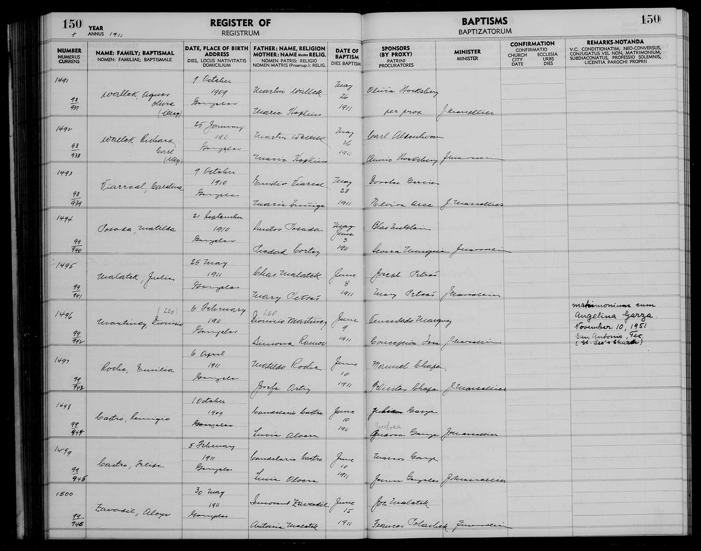
  <figcaption>Gonzales, 1911, entry 1496 &mdash; the record that recovered Leo's real name. "Martinez, <strong>Dionisio</strong>," with "(Leo)" pencilled in above it, born 6 February 1911, <strong>father Dionisio (Leo) Martinez, mother Simona Ramos</strong>. And in the far-right remarks column, added by another priest forty years later: <em>"matrimonium cum Angelina Garza, November 10, 1951."</em> The parish followed its children for life.</figcaption>
</figure>

<h2>Eleanor</h2>
<p><strong>Eleanor Martinez Quintanilla, 1922&ndash;2018</strong> <span class="badge proven">Proven</span>. My grandmother, and the join between this line and the <a href="quintanilla.html">Quintanilla</a> one.</p>

<p>Born <strong>11 July 1922 at 107 Florida Street</strong>. Her birth certificate lists her father as foreman of a feed store and her mother as the informant, writing from 127 Klein Street in her own hand.</p>

<p>In 1949 she swore to the character of a young Mexican immigrant named <strong>Manuel Quintanilla</strong> on his naturalization petition &mdash; federal law required two witnesses &mdash; and then married him, at <strong>St. Mary's Chapel at nine in the morning on 27 August 1949.</strong> The engagement notice in the paper names his father as <strong>Hector Quintanilla of Monterrey, Nuevo Le&oacute;n</strong>. Manuel was an optician; by 1960 he was managing Texas State Optical.</p>

<p>Two small things I found that aren't in any family telling.</p>

<p><strong>She played.</strong> <em>The News</em>, 2 February 1950, reporting the Alba Club's installation of officers at the St. Anthony Hotel: <em>"Mrs. Eleanor N. Quintanilla will accompany Emil Martinez with musical selections."</em> Five months married, and she is the accompanist.</p>

<p>Which is worth setting beside her great-grandfather Gabriel, whose occupation in the 1870 census was <strong>violinist</strong>. Four generations apart, and they are the only two musicians in the entire file.</p>

<p><strong>And there was a war in the house.</strong> <em>San Antonio Light</em>, 1 May 1943: <em>"Mrs. Leo Martinez and her daughter, Eleanor, 127 Klein St., bought stars to wear for the son and brother, <strong>Leo Martinez Jr., who is with the Civilian Technical Corps in England</strong> since August. Martinez was a mechanic at Kelly Field before volunteering."</em> Eleanor was twenty, buying a service star for her brother.</p>

<figure>
  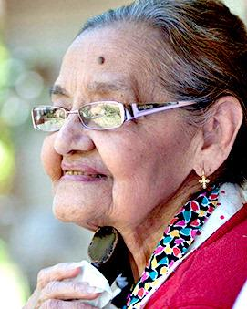
  <figcaption>Eleanor in her nineties. She died 5 August 2018, aged 96, and was buried from Blessed Sacrament in San Fernando Cemetery No. 2 &mdash; the same ground as her parents.</figcaption>
</figure>

<p>Her obituary is the best single document on this page, because it is the only one written by people who loved her:</p>

<blockquote>
<p>"Eleanor loved the San Antonio Spurs &mdash; and was thrilled when Congressman Joaquin Castro presented her with a video-taped message from Matt Bonner, who she nicknamed <strong>'The Red-Headed Angel.'</strong> Eleanor loved Sea Island, tending to her garden, and <strong>prayed two Rosaries a day</strong>. In her youth and later years, she was <strong>one of the top sales clerks at Joske's Downtown in Ladies Sportswear and was much sought after by customers from Mexico.</strong> &hellip; After her stroke in 2013, Eleanor helped pave the way for other handicapped and elderly Medicare patients to get proper skilled nursing care and was <strong>featured at the 2016 Medicare Summit in Washington DC.</strong>"</p>
</blockquote>

<p>Joske's, for anyone who didn't grow up in San Antonio, was not just a shop. Founded in 1867, its Alamo Plaza flagship &mdash; five levels, <strong>551,000 square feet</strong>, advertised as "The Biggest Store in the Biggest State" &mdash; was <strong>the largest department store west of the Mississippi</strong> until it closed in 1987. It was the first fully air-conditioned store in Texas and had the first escalators in the state. At Christmas it ran a fourth-floor "Fantasyland," a toy train in the window facing the Alamo, a forty-foot Santa on the roof and a mascot called Rusty the Reinsteer. Working its floor in a specialty department was a good job at the best address in Texas.</p>

<p><em>Honest note:</em> the only source for the Joske's career is the obituary itself. City directories of that era printed the husband's occupation and left the wife's blank. <strong>Like Leo's missing hand, this may be a fact that survives only in family memory</strong> &mdash; which is a reason to ask my mother about it while we can.</p>

<p>Eleanor's obituary names her daughter <strong>Eleanor Quintanilla Flynn</strong> &mdash; my mother &mdash; and her grandsons, including me. Seven documented generations end in that paragraph.</p>

<h2>What we got wrong</h2>
<p>Four things that were on this page or in this family's file, and shouldn't have been.</p>

<h3>1. We are not descended from the Alamo's first settlers</h3>
<p>A well-cited published genealogy had this line marrying at Mission San Antonio de Valero &mdash; the Alamo &mdash; on <strong>8 May 1721</strong>, three years after San Antonio was founded, when the entire Spanish population was about two hundred people. It is a wonderful story and I badly wanted it.</p>

<p>I checked it. The archdiocesan collection contains <strong>exactly one</strong> Juana Antonia de Carvajal, and her parents match the published file exactly, so it is the same woman. But her marriage record is dated <strong>24 June 1723</strong> and her husband is <strong>Diego Camacho</strong>. And a search for <em>any</em> Jose Martinez marriage between 1715 and 1727 in that collection returns nothing at all.</p>

<p>She may have married a Jose Martinez in 1721 and been widowed inside two years. That can't be disproved from here. But <strong>nothing supports it, and the beautiful version is the unsupported one</strong> <span class="badge lore">Lore</span>. The generation below it fails on arithmetic as well: it makes a boy baptised in 1772 the father of a child baptised in 1781. Both came off the line.</p>

<h3>2. We are probably not Canary Islanders</h3>
<p>In March 1731, fifteen families from the Canary Islands arrived and formally chartered the town of San Fernando &mdash; San Antonio's equivalent of Mayflower ancestry. This page used to claim descent from <strong>Juan Leal Goraz</strong>, one of the fifteen and the town's first alcalde, and called me a ninth-generation Texan on the strength of it.</p>

<p>Goraz is real and thoroughly documented. <strong>The chain from him down to the Antonio Leal who farmed the Medina River in the 1840s is not</strong> <span class="badge lore">Lore</span>. Neither Losoya nor Gamboa is a Canary Islander surname either; both are presidio and settler families. Please don't repeat the Islander claim as fact.</p>

<p>What replaced it is better, in my opinion, because it is true: <strong>a soldier's family and a farming family who held the same river bottom for two hundred years.</strong></p>

<h3>3. Francisca Luna was not Leo's mother</h3>
<p>This page used to say she probably was. She wasn't &mdash; she married his father seven months after he was born, and the 1900 census counts her children without him. She was his stepmother, and her parents Felipe Luna and Antonia Herrera are not blood relatives of ours.</p>

<h3>4. Roberto Ramos and Melchora are not Simona's grandparents</h3>
<p>This page used to give them as probable. They came from a second marriage in 1900 that I assumed belonged to our Anastasio Ramos. It doesn't: that groom was marrying Maximiana Quiros while our Anastasio was still fathering children with Simona Cruz. <strong>Two different men.</strong> The right grandparents are Miguel Ramos and Guadalupe de los Santos, from Anastasio's own baptism.</p>

<h2>The line, in one piece</h2>
<div class="tablewrap">
<table>
<tr><th>Gen</th><th>Who</th><th>When</th><th>Grade</th></tr>
<tr><td>&mdash;</td><td>My mother, <strong>Eleanor Quintanilla Flynn</strong></td><td>living</td><td></td></tr>
<tr><td>1</td><td><strong>Eleanor Martinez</strong> &times; Manuel Quintanilla</td><td>1922&ndash;2018</td><td>Proven</td></tr>
<tr><td>2</td><td><strong>Dionisio "Leo B." Martinez</strong> &times; <strong>Simona Ramos</strong></td><td>1890&ndash;1970 &middot; 1891&ndash;1984</td><td>Proven</td></tr>
<tr><td>3</td><td><strong>Jose Maria Martinez</strong> &times; <em>mother unknown</em></td><td>b. 1869</td><td>Proven / blank</td></tr>
<tr><td>4</td><td><strong>Gabriel Martinez</strong> &times; <strong>Mariana Leal</strong></td><td>1841&ndash;1916 &middot; 1841&ndash;1905</td><td>Proven</td></tr>
<tr><td>5</td><td><strong>Jose Gabriel Justo Martinez</strong> &times; <strong>Mar&iacute;a Jesusa Farias</strong></td><td>b. 17 Jul 1811</td><td>Probable</td></tr>
<tr><td>5</td><td><em>and</em> <strong>Antonio Leal</strong> &times; <strong>Mar&iacute;a del Pilar Romena</strong></td><td>fl. 1841&ndash;1850</td><td>Proven</td></tr>
<tr><td>6</td><td><strong>Dionicio Martinez</strong> &times; <strong>Josefa Losoya</strong></td><td>fl. 1811</td><td>Proven</td></tr>
<tr><td>7</td><td><strong>Jose Antonio Martinez</strong> &times; <strong>Feliciana Gamboa</strong></td><td>fl. 1780s</td><td>Proven</td></tr>
<tr><td>7</td><td><em>and</em> <strong>Francisco Losoya</strong> &times; <strong>Cathalina Poros</strong></td><td>fl. 1780s</td><td>Proven</td></tr>
</table>
</div>

<p>Seven generations above my mother &mdash; and the couple at the top were baptising a daughter at the Alamo, as a parish church rather than a fort, in <strong>February 1781</strong>.</p>

<h2>The documents</h2>
<ul class="docs">
  <li><a href="documents/leo-death-cert-1970.jpg">Leo B. Martinez, Texas death certificate 8189, 1970</a><span class="doc-what">Names his father, and leaves his mother "Not Available." The blank that started all of this.</span></li>
  <li><a href="documents/leo-simona-gravestone.jpg">Leo and Simona's gravestone, San Fernando Cemetery No. 2</a><span class="doc-what">"Recuerdo de su familia." Reads "Leo B., Sr." &mdash; the stone agrees with the records, not with the memorial that spelled out "Baez."</span></li>
  <li><a href="documents/martinez-luna-marriage-1890.jpg">Jose Maria Martinez &times; Francisca Luna, Losoya, 19 Nov 1890</a><span class="doc-what">Entry 324. Names both sets of parents, gives us Gabriel and Mariana, and dates the marriage seven months after Leo's birth.</span></li>
  <li><a href="documents/census-1900-caramel-road.jpg">1900 census, Caramel Road, Bexar County</a><span class="doc-what">Gabriel owning free at dwelling 91, his son Jose Maria renting at 90. Gabriel reads and writes and speaks no English.</span></li>
  <li><a href="documents/census-1920-wood-yard.jpg">1920 census, 705 Florida Street, San Antonio</a><span class="doc-what">Leo as a wage hand in a wood yard, renting &mdash; ten years before he owned 127 Klein and employed men.</span></li>
  <li><a href="documents/leo-simona-marriage-1910.jpg">Leo &times; Simona marriage licence, Guadalupe County, 1910</a><span class="doc-what">Book 6 p.377, indexed "Donecio" and "Semona." A courthouse wedding, so no parents recorded.</span></li>
  <li><a href="documents/simona-baptism-1891.jpg">Simona Ramos baptism, Annunciation, San Antonio, 1891</a><span class="doc-what">Page 175. Entered in Latin as "Simonam," indexed as a boy, lost for a century. Names Anastasio Ramos and Simona Cruz.</span></li>
  <li><a href="documents/leo-jr-baptism-1911.jpg">Leo Martinez Jr. baptism, Gonzales, 1911</a><span class="doc-what">Entry 1496 &mdash; the record that proved Leo's real name was Dionisio, with a marginal note added forty years later.</span></li>
  <li><a href="documents/losoya-baptisms-1864-rita.jpg">Losoya parish baptism register, 1864</a><span class="doc-what">Includes Rita Martinez, daughter of Gabriel and Mariana Leal. The family's own parish pages.</span></li>
  <li><a href="documents/francisca-luna-grave.jpg">Mission Espada death register, 1936 &mdash; Francisca Luna</a><span class="doc-what">"Born Espada. Age 74. Father Felipe Luna, Mother Antonia Herrera." Leo's stepmother &mdash; and, as it turns out, not a blood relative at all.</span></li>
  <li><a href="https://www.loc.gov/item/tx0015/">Mission San Francisco de la Espada, Library of Congress</a><span class="doc-what">The mission at the end of the family's road, documented and still standing. You can walk it today.</span></li>
</ul>

<h2>Still hunting</h2>
<p><strong>Leo's mother, above everything.</strong> The new route is his own obituary: trace <strong>Catarina Bitela, Gabriela Carrizales, Seferino, Joe and Frank Martinez</strong>. Any one of them born before 19 November 1890 is a full sibling, and a full sibling's baptism names her. It is the first genuinely new lead in months.</p>

<p><strong>Close the 1811 identification.</strong> That baptism is graded <em>probable</em> rather than <em>proven</em> for one reason: the censuses imply Gabriel Sr. was born 1815&ndash;1818 and the register says 1811. In the register's favour, this family's census ages run consistently young &mdash; Celedonio, baptised in February 1846, is entered as "aged 8" in 1850, when he was four. What would settle it outright is Gabriel Sr.'s own burial entry, with his age at death, in the El Carmen death register for the 1880s.</p>

<p><strong>Resolve the break above generation seven.</strong> Find Jose Antonio Martinez's own baptism &mdash; around 1755&ndash;60, <em>not</em> the 1772 boy the published genealogy picked &mdash; and his marriage to Feliciana Gamboa, which would name his parents and put a real eighth generation on this page.</p>

<p><strong>Two loose ends from Simona's 1984 obituary:</strong> a son "Joe Anastacio Martinez" and a daughter "Mrs. Juanita Gloria Flores," neither of whom is among the nine children we know about. Either two more children, or the funeral home's error printed twice.</p>

<p><strong>And a book.</strong> Frederick C. Chabot's <em>With the Makers of San Antonio</em> (1937), page 81, is cited for this family throughout and isn't free online. A library copy would probably answer where Feliciana Gamboa came from &mdash; the weakest name in the whole line.</p>

<div class="footer"><p><a href="index.html">Back to all four lines</a></p></div>
</main>
